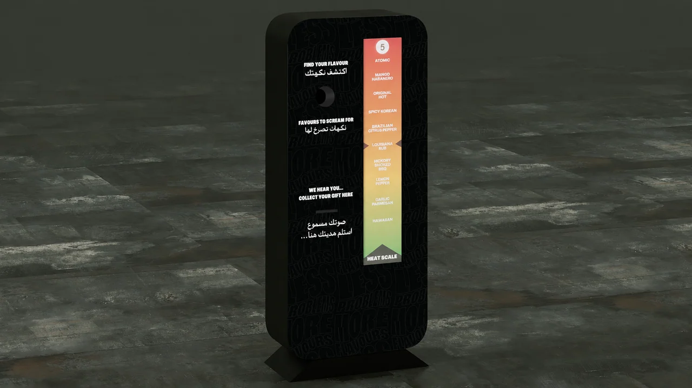

Projecting microphone aperture
The render shows a rounded black enclosure, projecting microphone aperture and lower collection slot.
Sound translated into a visible activation idea.
Explore the story
Bring input, response and reward into one narrow enclosure.
A projecting microphone opening sits beside a vertical green-to-red scale. Bilingual instructions and a lower collection slot define the proposed sequence visually.
The render shows a rounded black enclosure, projecting microphone aperture and lower collection slot.
The right-hand strip progresses from green through yellow to red, with a numeric marker at its top.
Activation concept / graphics and visualization
Explore the complete compositions and interface states. Select any image for a closer look.
Black freestanding sound-activation booth with a microphone opening, gift slot and tall green-to-red heat scale.
Structure, interaction and visual decisions that give the work its character.
RoleContribution awaiting confirmation
AssetsExisting project visualization with AI-assisted logo cleanup. Fine text may differ from source; identifying campaign wording remains. Public-use and supplied-asset credits require confirmation.
StatusPrivate evidence draft; exact contribution and final delivery to confirm